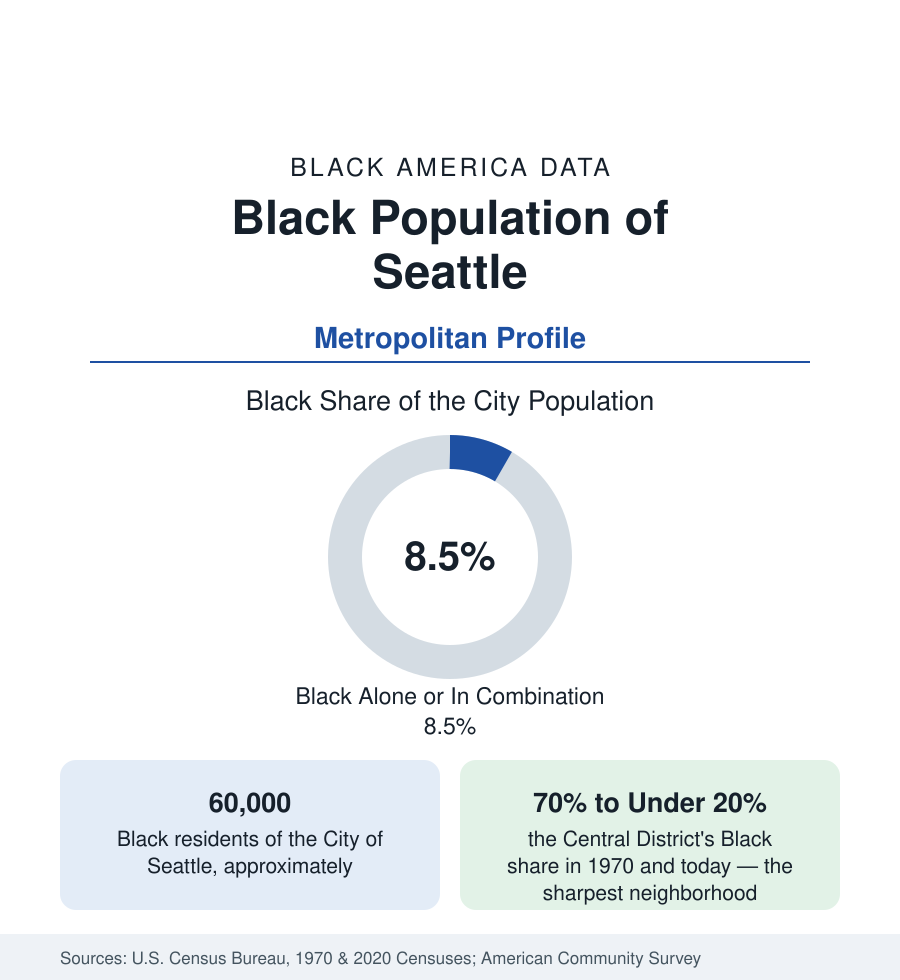

Black Cities
Black Seattle: The Central District's Transformation
Seattle holds about 60,000 Black residents in the city and 230,000 across the metro — a small share by this section's standards, transformed by the Central District's change. The census profile.

Seattle holds about 60,000 Black residents within the city — Black alone or in combination, roughly 8 to 9 percent of its people — and about 230,000 across the metropolitan area, around 6 percent of the region. By the standards of this section those are small shares, but Seattle's Black data contain the West's sharpest neighborhood transformation: the Central District, the historic Black neighborhood, went from more than 70 percent Black in 1970 to under 20 percent in the most recent counts, while the region's Black population grew and dispersed south. This article profiles the population in the census data.
Building Black Seattle
Seattle's Black community formed in the Central District because it had to: restrictive covenants across the young city confined Black homebuyers to the district east of downtown, and wartime shipyard and defense migration in the 1940s multiplied its population. What the confinement built was a complete Black urban world in miniature — churches, businesses along Jackson Street and 23rd Avenue, a jazz scene of national note in the postwar years, and the region's Black political base. The community never numbered more than a few tens of thousands, but its institutional density per capita rivaled far larger cities', and its alumni include a disproportionate share of the Pacific Northwest's Black professional class.
The Transformation: Reading the Tract Data
The Central District's census tracts record the fastest racial turnover of any historic Black neighborhood in the West. As Seattle's technology economy boomed and housing values multiplied, the district's Black population fell decade by decade — from its 1970 majority of more than 70 percent, through roughly a third at the century's turn, to under a fifth in the recent data — while the neighborhood's total population grew. The mechanism in the data is the standard one of this section, at maximum intensity: rising prices, property-tax pressure on elder homeowners, and the sale of family homes into a market their owners' descendants cannot buy back into. City policy responses — affordability set-asides, a community preference policy for displaced residents, land-banked parcels for Black institutions — are tracked in the housing literature as the test case of whether documented displacement can be answered after the fact.
The Southward Dispersal
The region's Black population did not shrink; it moved. Rainier Valley, in the city's southeast — among the most diverse districts in the nation by the census diversity measures — holds the city's largest remaining Black concentration, a multiethnic corridor of Black, Filipino, Vietnamese, Chinese, Ethiopian, and Latino communities. Beyond the city, the Black population of the south suburbs — Tukwila, SeaTac, Renton, Kent, Federal Way, Auburn — has grown into the metro's Black center of gravity, joined by Tacoma, the region's second city at roughly a tenth Black, with its own historic Black community around the Hilltop neighborhood. The east side suburbs (Bellevue, Redmond) and the north corridor record smaller shares. The metro's Black total, about 230,000, grows steadily in the estimates even as the historic core empties — the purest form in this section of growth-through-dispersal.
Composition: The Newest Layer
Seattle's Black population has one of the highest foreign-born shares of any metro in this reference: East African communities — Ethiopian, Eritrean, and Somali, concentrated in Rainier Valley, Tukwila, and SeaTac — form a large and growing segment, alongside West African and Caribbean communities and the native-born base. The survey data show the composite effect: a Black Seattle that is simultaneously among the most educated and highest-income in this section in its professional strata — drawn by the technology economy in the migration data — and, in its refugee-origin communities and remaining Rainier Valley base, carrying poverty indicators at the hard end. The median describes neither, in the pattern by now familiar.
Reading the Seattle Numbers
Seattle closes the major-metro sequence of this section with the limiting case: a Black population small in share, rich in documentation. Its tracts demonstrate, in the cleanest time series in the West, that a historic Black neighborhood can be lost to prosperity rather than decline — and that a region's Black population can grow everywhere except the place that made it. The county tables record where it reassembled.
More in Black Cities
Black Atlanta: Population, Distribution, and Growth of a Black Metropolis
Metro Atlanta holds more than two million Black residents — roughly one in three, second only to New York. The suburban distribution, migration history, and composition of Black Atlanta in the census data.
Black New York: The Largest Black Population in America
The New York metropolitan area holds about 3.4 million Black residents — more than any metro in the nation — and the city itself about two million. The census profile.
Black Washington: The District and the Metro
The Washington metro holds about 1.6 million Black residents, and the District itself — long a majority-Black city — now records a Black share near 41 percent. The census profile.
Source: U.S. Census Bureau, 2020 Census; American Community Survey; Population Estimates Program.